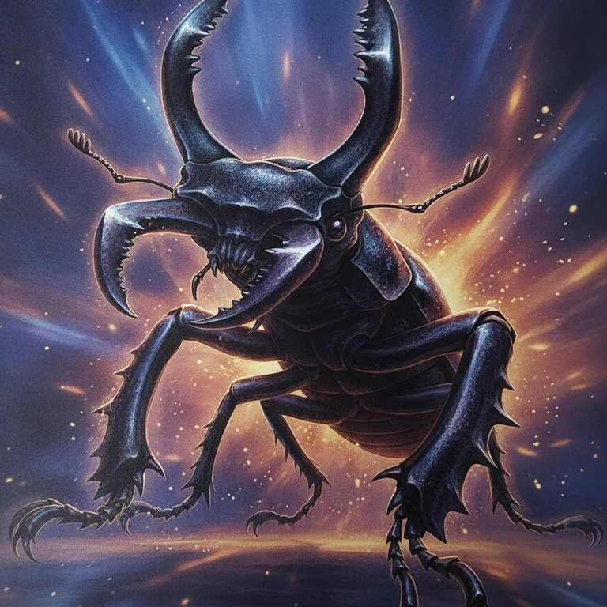
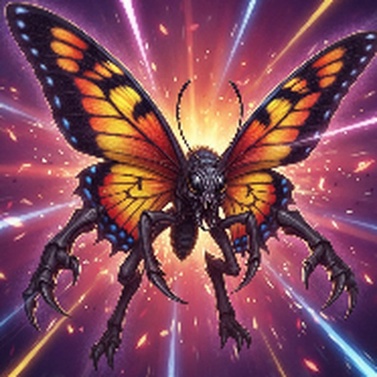
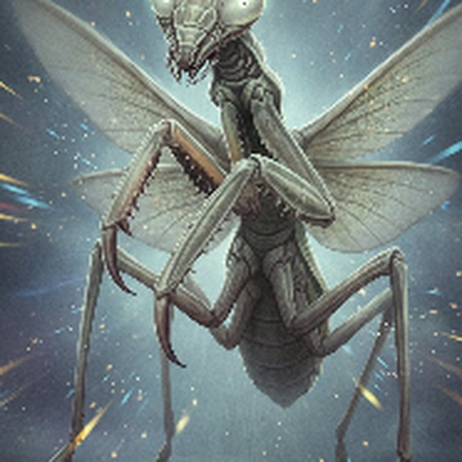

AI 진화 탐구 수업
내가 설계한 곤충은
내가 설계한 곤충은
어떤 환경에서 어떻게 살아갈까?
아이가 직접 그린 곤충의 몸 구조와 태어난 환경을 바꿔 보며, 생물이 환경에 맞춰 살아가는 원리(적응과 진화)를 AI 와 함께 배우는 체험 수업입니다.
1수업은 이렇게 진행돼요
✏️
곤충 그리기
A4 활동지에 상상한 곤충을 자유롭게 그려요.
🧬
몸 구조 설계
곤충 종류를 고르고 머리·다리·갑옷·날개·눈 등을 1~5단계로 정해요.
🌍
환경·성장 선택
어디서 태어났는지, 얼마나 자랐는지 고르면 능력이 달라져요.



AI 가 그려주기
AI 가 실감 나는 곤충으로 그리고, 능력 변화를 도형으로 보여줘요.
2핵심: 몸의 구조 × 사는 환경 = 살아가는 방식
선택 하나하나가 능력을 바꿉니다 — 좋기만 한 몸은 없고, 환경마다 유리한 몸이 다르다는 것을 직접 비교하며 깨닫습니다.
⚖️ 몸의 특징 — 얻는 만큼 잃어요
실제보다 많이 그린 부위도 AI 가 그대로 그려주고, 대신 장단점이 생겨요.
| 큰턱 4개 이상 | 공격력 ↑ · 체력·지능 ↓ |
| 다리 8개 이상 | 체력 ↑ · 공격력 ↓ |
| 날개 더 많이 | 방어력 ↑ · 체력 ↓ |
| 더듬이 4개 이상 | 지능 ↑ · 방어력 ↓ |
| 발톱 2개 | 공격력 ↑ · 재빠름 ↓ |
| 갑옷·날개를 크게 | 튼튼함 ↑ · 몸이 무거워 재빠름 ↓ |
🦋 나비·벌·사마귀는 원래 날개가 4장! 곤충마다 "보통" 구조가 다르다는 것도 함께 배워요.
🗺️ 태어난 환경 — 환경이 몸을 만들어요
| 🌡️ 기온 상승 | 뜨거운 땅에서 버텨 체력 ↑, 껍질은 약해짐 |
| 🏞️ 저지대 | 부딪히며 자라 껍질이 단단 |
| 💧 물 근처 | 미끌미끌한 몸으로 재빠르게 피함 |
| 🗻 고지대 | 체력도 껍질도 골고루 |
| 🌠 운석 충돌지 | 큰 재난을 견뎌 몸이 튼튼 |
환경끼리 강하고 약한 관계가 맞물려 "무조건 좋은 환경"은 없어요.
신생충재빠르지만 힘 약함
1년충모든 능력 기본
n년충강하지만 체력 ↓
3아이들이 배우는 것
🌱적응환경에 따라 살아남기 좋은 몸이 달라요
⚖️장단점하나를 키우면 다른 것을 내줘야 해요
🔍관찰·비교실제 곤충의 몸 구조와 견주어 봐요
🌈다양성같은 곤충도 선택에 따라 전부 달라져요
🤖AI 이해내 생각을 설명해 AI 가 그리게 해요
4같은 방식으로 주제를 넓혀 개발하고 있어요
G7BB 진화 탐구 시리즈
"몸의 특징을 고르고, 환경을 바꾸고, 결과를 비교한다" — 같은 수업 틀로 다른 생물을 배워요.

🦖 공룡개발 중
몸집·이빨·사는 시대를 골라 보며 생존과 멸종을 생각해요

🐟 어류개발 중
지느러미·몸 모양과 물의 깊이·온도로 물속 적응을 배워요

🌿 식물개발 중
잎·뿌리와 햇빛·물·흙 조건으로 식물의 생존 전략을 배워요